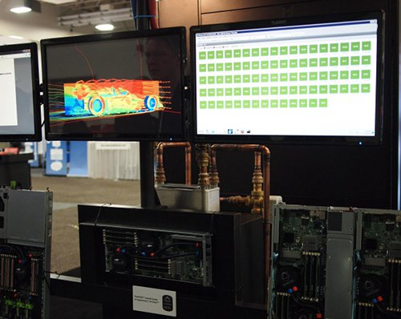
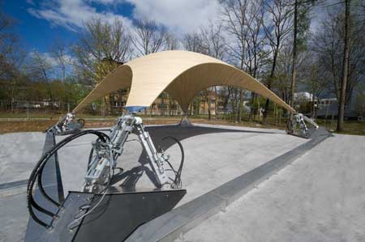

Submitted by symscape on November 19, 2012 - 14:39
SC12 - the meet-up for all things supercomputing is now over. Our Microsoft collaborator, Wen-ming Ye, was at SC12, and while he was on the show floor he snapped some pictures of the Asetek liquid-cooling cluster running Caedium CFD simulations. So for anyone who missed the show, enjoy the pictures below thanks to Wen-ming.
Asetek Cluster Running Caedium CFD SimulationsWindows HPC Server 2008, HPC cluster manager heat map for 86 Caedium instances
Submitted by Richard Smith on November 13, 2012 - 10:49
Another news blast, this time with an aerodynamics theme. Read on to discover how trucks can be more efficient, how racecars and bikes can go faster, and how to make a stunning McLaren ad. Hint - it's all down to aerodynamics.
Making of an Aerodynamics Themed McLaren AdScroll to the bottom of the page to see the finished ad
More F1 in Schools news - Rapid Motion, a joint team from Australia and Germany, finished 4th overall at the 2012 F1 in Schools World Finals held in Abu Dhabi. Using Caedium Professional CFD simulations the team analyzed the aerodynamics of various designs resulting in a 16% improvement in average speed over their baseline car.
Congratulations go out to F1 in Schools team Revved Up who have qualified for the Australian F1 in Schools National Finals, after a convincing win at their state competition. Revved Up used Caedium Professional CFD simulations to help optimize the aerodynamics of their car and to good effect by all accounts!
Submitted by Richard Smith on November 6, 2012 - 12:39
It seems that analogies between fluid flow and other physical processes continue to proliferate. Add to that list the analogy between a hydraulic jump (think smooth-shallow to rough-deep transition in a sink under a running tap) to a white hole (think black hole running backwards in time). Physicists at the University of Nice Sophia Antipolis, France recently showed through "...an experimental demonstration that the circular hydraulic jump represents a hydrodynamic white hole...".
Submitted by Richard Smith on October 29, 2012 - 11:17
Browsing through the news today I can across an interesting array of fluid dynamics related stories that I thought I'd share. So if you want to see how the Williams F1 team uses CFD and wind tunnels, or why a half-full (or is it half-empty?) bottle of water breaks when you hit it in a certain way (clue: cavitation), or how to make nanoballs (clue: bristles), and more, check out the links below.
Submitted by Richard Smith on October 17, 2012 - 13:01
I think everyone is well aware of the link between tsunamis and earthquakes after the devastation wreaked in recent years on Japan and Indonesia. However, there is a lesser known water wave called a seiche that is limited to semi-enclosed and fully-enclosed bodies of water, such as lakes, bays, swimming pools, and even puddles. I went searching for links between earthquakes and fluid dynamics after I experienced a minor earthquake (4.0 magnitude) here in New England.
Submitted by Richard Smith on October 9, 2012 - 13:08
While it seems that we are still a long way away from the cloaking devices seen in Star Trek, electromagnetic cloaking using metamaterials is now possible, at least in the laboratory. Not to be outdone, fluid flow and heat transfer have also recently joined the cloaking party.
Submitted by Richard Smith on September 24, 2012 - 18:52
What if you could change the shape of a tensile structure according to the natural loads, such as wind forces, it experiences? In exploring this question researchers at the University of Stuttgart and the company Bosch Rexroth came up with a tensile canopy (membrane) - nothing new there. However, their novel design uses a feedback system driven by a sensor array connected to hydraulic rams that apply counter forces to natural loads.
Morphing Tensile CanopyImage courtesy of Bosch Rexroth

 Get our Blog feed
Get our Blog feed{kind=link}